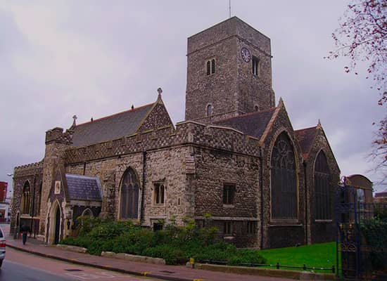
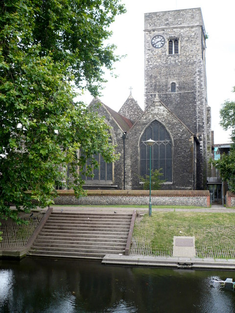
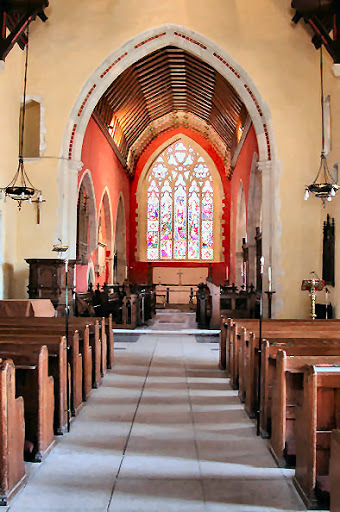
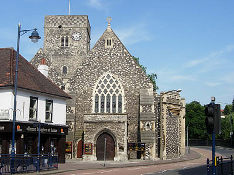
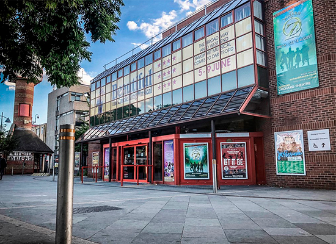
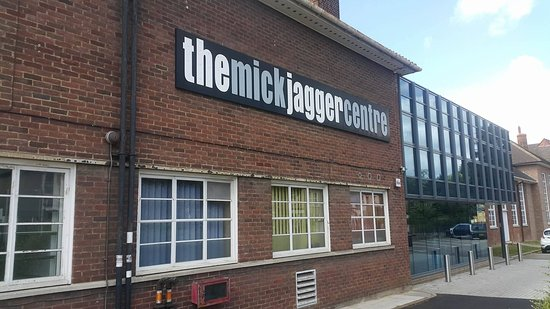

Dartford Central Library and Museum es una biblioteca en el centro de la ciudad de Dartford, Kent, Inglaterra.
La biblioteca fue abierta el 1 de enero de 1916 por A. W. Smale, Presidente del Consejo del Distrito Urbano de Dartford, y W. A. Ward, Presidente del Comité de la Biblioteca. Sus primeros buscadores fueron soldados en la Primera Guerra Mundial que se quedaron cerca en hospitales militares, recuperándose de las heridas recibidas mientras servían en las trincheras. La Biblioteca Central de Dartford fue construida con la ayuda de una donación del filántropo Andrew Carnegie. Fue diseñado por Thomas E. Tiffin AMICE, el entonces inspector del Consejo del Distrito Urbano de Dartford, y construido en Bath por los Sres. H. Friday e Sons and Ling, utilizando piedra de Portland y York.
En 1937, la biblioteca se expandió sobre lo que una vez fue la lata de Dartford. Durante la Segunda Guerra Mundial, su cúpula de cúpula sirvió como puesto de vigilancia de ataque aéreo.
historia 2
a1
En 2016, la biblioteca tuvo una importante remodelación y acceso interno creado entre ella y el Museo Dartford. La biblioteca también abrió la Galería Peter Blake para exhibir obras de artistas locales.
Hoy, la Biblioteca Dartford está abierta de lunes a viernes de 08:30 a 18:00, excepto los jueves que abre hasta las 20:00 y los sábados de 09:00 a 17:00. Está dirigido por el Consejo del Condado de Kent.

Iglesia de la Trinidad
La Iglesia de la Santísima Trinidad (Holy Trinity Church) es una iglesia anglicana que se halla en el centro de Hastings, una ciudad y municipio inglés del condado de Sussex Oriental (al sureste de Inglaterra). Fue construida en los años 50 del siglo XX -un periodo en el que Hastings estaba creciendo rápidamente como centro turístico de costa- por el prolífico y excéntrico arquitecto Samuel Sanders Teulon, “cabeza de los arquitectos sin escrúpulos del estilo “Victorian Gothic Revival” (Resurgimiento gótico victoriano) La iglesia de estilo Gótico Decorado Inglés Temprano se distingue por su opulentamente decorado interior y su complicada disposición en el centro de la ciudad, dado que no se halló otro emplazamiento apropiado para la misma. Se tardaron ocho años en construirla y nunca se llegó a levantar la torre inicialmente planeada. La designación patrimonial del edificio es de Grado II* debido a su importancia arquitectónica e histórica
historia 2
a1
Si bien la ciudad había sido un puerto pesquero desde sus orígenes en el año 928, cuando fue mencionada por primera vez en documentos oficiales, Hastings creció rápidamente en el siglo XIX hasta convertirse en la ciudad victoriana que es en la actualidad. Sus comunicaciones de transporte la han convertido en un centro al alcance de los turistas y viajeros provenientes de Londres, convirtiéndola en un centro vacacional costero popular y una “rica, próspera ciudad con gran fuerza y confianza en sí misma” Durante parte del siglo XIX fue una de los destinos vacacionales más de moda de Gran Bretaña.
La expansión de la ciudad favoreció la construcción de la ciudad, particularmente apoyada por la “Church of England” (Iglesia Anglicana). La zona de la ciudad antigua de Hastings poseía siete iglesias en el siglo XIII, pero el declive del medievo hizo que tan solo quedasen dos a principios del siglo XIX; la iglesia de “All Saints Church” (Iglesia de Todos los Santos) y la de “St Clement's Church” (Iglesia de San Clemente). El posterior desarrollo de Hastings sobrepasó los límites del cauce del valle del río Bourne sobre el cual el centro de la ciudad había sido edificada, extendiéndola más y más hacia el este en busca de más tierra. Entre los años de 1801 y 1821, la población aumentó, pasando de 2.982 habitantes (el 90% de los cuales vivían en el casco antiguo) a 6.051. Poco después, la ciudad para las clases altas ideada por James Burton, St Leonards-on-Sea, más al oeste, atrajo más población a la zona y la distancia entre ambas fue pronto ocupada. El centro neurálgico se desplazó del centro de la ciudad y sus iglesias, y pronto se planificaron nuevos lugares de culto. La primera de ellas, que se hallaba en los nuevos barrios de Hastings, fue la iglesia de “St Mary-in-the-Castle”, construida como centro de culto del barrio residencial, en 1824, la cual reemplazaba a una antigua colegiata que formaba parte del castillo de Hastings (Hastings Castle).En 1851, se construyó la estación de ferrocarril de Hastings y los terrenos adyacentes se convirtieron en las calles Cambridge Road, Robertson Street y Trinity Street. Hasta entonces había sido un terreno despoblado ocupado por algunas chabolas. Esta zona del “nuevo” Hastings fue elegida como el nuevo emplazamiento para una segunda iglesia anglicana. La benefactora y filántropa Condesa Waldegrave, hizo un donativo de 1.000 libras esterlinas para cooperar en su construcción, y el arquitecto Samuel Sanders Teulon se encargó de diseñar el edificio. Hacía poco tiempo que había presentado los planos para la construcción de gran casa en Hastings y que había construido diversas iglesias cercanas en Rye Harbour y en Icklesham. El conde Earl Cornwallis donó unos terrenos al norte de Cambridge Road, más arriba de los jardines Holmesdale Gardens (aproximadamente en las coordenadas 50.8558°N 0.5751°E) pero poco después de haberse iniciado las obras, un desprendimiento de tierra demostró que el lugar no era seguro.
a6

a1
Ya se habían gastado unas 500 libras esterlinas. El lugar era extremadamente difícil dado que la intersección de las calles Robertson Street y Trinity Street formaban un ángulo excesivamente agudo.
La empresa de ingeniería fue realizada por la empresa John Howell & Son. Los trabajos en el nuevo emplazamiento comenzaron en 1857. La Condesa Waldegrave colocó la primera piedra el 22 de julio de ese mismo año. La nave fue la primera parte consagrada, en 1858, y la iglesia abrió sus puertas al culto. El presbiterio fue terminado de construir al año siguiente pero no fue consagrado hasta 1862.
Lady St. John, residente local, había sido donante de fondos para la construcción de la iglesia. Había donado 200 libras esterlinas. Se hallaba tan preocupada por el desplazamiento de gente pobre procedente de páramo que contribuyó a la construcción de una nueva iglesia en St Leonards-on-Sea, zona a la que mucha gente había tenido que desplazarse como lugar de residencia. La iglesia de Christ Church, sita en la calle London Road, abrió sus puertas en 1860.
En 1892 se llevó a cabo una alteración importante cuando se construyó una sacristía poligonal junto al presbiterio. Junto a ella, al lado sur, se planteó edificar una torre y un capitel sobre el porche pero, debido al alto coste de la construcción de la iglesia, ninguno de los dos elementos se llegó a construir. Entre 1889 y 1890, el arco del presbiterio fue decorado con un intrincado tallado, creación del escultor Thomas Earp y un artesano de Ghent creó un coro alto de gran valor ornamental. W. H. Romaine-Walker diseñó un “excepcional” púlpito en alabastro y mármol con doble escalinata simultánea, que lo rodeaba. También había sido el creador de la sacristía y otras reequipamientos llevados a cabo en la iglesia. A principios del siglo XX, el arquitecto londinense, Henry Ward, que se había afincado en Hastings, llevó a cabo gran cantidad de obras en la ciudad y fue el creador de una extraordinaria capilla en miniatura dedicada a la Virgen -situada en la base de la sala del órgano- y algunos retoques en las puertas y los ventanales. Posteriormente, durante el siglo XX, el maestro calígrafo Edward Johnston creó un misal de alta calidad, provisto de iluminación y cubierto de vitela.
Arquitectura

Samuel Sanders Teulon tuvo que adecuar su diseño de la iglesia de Holy Trinity Church a las dificultades planteadas por el emplazamiento en el centro de la ciudad -dificultades que Nikolaus Pevsner calificó de “una auténtica locura”- y esto provocó que su disposición fuese muy poco frecuente. La nave está compuesta de seis secciones o tramos y posee un pasillo en la zona sur, un presbiterio con un ábside, una sacristía con techo cónico y un porche formado que forma parte de la torre que nunca se llegó a construir. En el lado oeste, frente a Claremont, la nave posee dos hastiales y un ventanal de gran arco ojival con tracería y labrados en piedra. En el lado norte, frente a Trinity Street, la iglesia se halla dividida en seis tramos con hastiales de crucería, cada uno de ellos con tres vidrieras con arcos ojivales. Hay más vidrieras parecidas en el ábside y otra más elaborada en el lado norte del presbiterio. El porche que se halla formando un ángulo con respecto a Roberson Streeet, conduce a un pasillo orientado al sur. La esbelta estructura se halla presidida por una gran figura de la Trinidad en un tímpano. Un tejado de ligera inclinación sustituye a la torre sin edificar. La iglesia combina los estilos Gótico Inglés Temprano y Decorado, y está construida íntegramente en piedra de varios tamaños generalmente dispuestas en hilada. El estilo típico de Teulon era “fuertemente Gótico e idiosincrático” y poseía un “dominio personal” de dicho movimiento arquitectónico.
En el interior, el techo de la capilla se halla ricamente tallado, especialmente en sus ménsulas, habiéndose llevado a cabo unos trabajos similares en la parte superior de la cámara del órgano y del arco del presbiterio, cuya remodelación fue realizada a últimos del siglo XIX. Todos los tallados fueron ejecutados por Thomas Earp. La pequeña capilla a Nuestra Señora, dispuesta debajo de la cámara del órgano, presenta un trabajo único en su género. La pila bautismal data de la fecha de la inauguración de la iglesia pero su extremadamente detallado tallado de follaje en el tronco del pilar y de la base del mismo, fueron ejecutados en 1903.
La iglesia en la actualidad

La Holy Trinity Church fue incluida en la lista de monumento del patrimonio y clasificado en Grado C, el 14 de septiembre de 1976, habiendo sido elevado este a Grado II* como monumento clasificado, estando considerado “particularmente importante… (y) de algo más que de especial interés”. En febrero del año 2001, era uno de los trece monumentos clasificados en Grado II* y de los quinientos treinta y cinco clasificados en general en el municipio de Hastings.
La parroquia del Holy Trinity abarca la feligresía del centro de Hastings. La iglesia limita con (en sentido de las agujas del reloj): Falaise Road, Linton Road, Amherst Road, Lower Park Road, Mann Street, South Terrace, Queens Roas, Harold Place y el paseo marítimo.
La valoración crítica de la iglesia, en el siglo XX, era generalmente positiva. La obra “Victoria County History of Sussex” (Historia del Condado Victoria, Sussex), escrita en 1937, se refirió a la iglesia como: “un representación bastante florida del estilo gótico decorado”, mientras que el historiador Robert Elleray la describió como: “entre las de mayor calidad de las iglesia de estilo victoriano, en Sussex” (12) y su interior como uno de los mejor ejecutados de entre todas las iglesias del condado. Frecuentemente se ha empleado, a la hora de referirse a ella, el término “catedral de Hastings”.
En noviembre del año 2014, un equipo de expertos de la iglesia de St. Peter’s Church, en Brighton, iniciaron una nueva fase en la existencia de la iglesia, convirtiéndola en parte del grupo de iglesias de la Santísima Trinidad (HTB) y actualmente es conocida con las siglas HTH (iglesia de la Santísima Trinidad de Hastings)

Teatro Orchard
El Orchard Theatre es un teatro receptor de 1025 asientos en el centro de Dartford, Kent. Fue construido por Dartford Borough Council y abierto por el duque de Kent el jueves 14 de abril de 1983. El teatro presenta una variedad de música popular, comedia, familia, danza, teatro, música clásica y eventos de variedades, así como una pantomima anual.
Ha sido dirigido por HQ Theatres & Hospitality, parte de Qdos Entertainment, desde 2008.

The Mick Jagger Centre
El Centro Mick Jagger es un lugar de artes escénicas en Dartford, Kent, Inglaterra, Reino Unido, dentro de los terrenos de Dartford Grammar School. Lleva el nombre del cantante de los Rolling Stones, Mick Jagger, que era alumno de la escuela. Tiene dos escenarios principales y organiza talleres de teatro en verano.